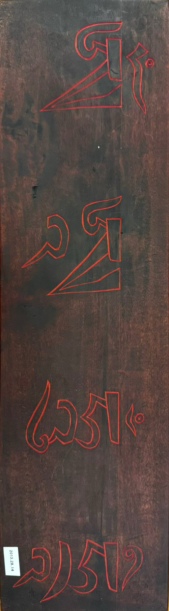

Tibetan Buddhist Woodblock
Description
This is a double-sided Tibetan woodblock used for printing, measuring 5½ × 19½ in. Everything on the block is carved in reverse: it was never meant to be looked at directly, but inked and pressed onto paper to produce repeated images and texts (Lin and Jackman). The front features five symmetrical panels: three Buddhas in distinct mudras (vitarka, dhyana, and dharmachakra) flanked by two stupas, separated by floral and cloud motifs, with reversed Tibetan script in the formal uchen style running along the bottom edge (Lin and Jackman).
Analysis
The reverse side of the block carries six syllables in bold red, Om Mani Padme Hum, which are the most sacred mantra in Tibetan Buddhism, written in a Sanskrit-embellished Tibetan script (Lin and Jackman). Each syllable corresponds to one of the six perfections: generosity, ethics, patience, diligence, concentration, and wisdom (Dalai Lama). Functionally, woodblock printing was adopted in Tibet starting from the 12th century, and a piece like this likely comes from one of the major printing houses such as Derge or Nartang during the 15th to 19th centuries (Trinlé and Gonkatsang). Generally, woodblock printing was commissioned by monasteries or wealthy sponsors to earn spiritual merit and required a complex division of labor among engravers, scribes, and proofreaders (Trinlé and Gonkatsang). Its durability meant that a single block could produce thousands of sacred prints over centuries, each carrying a blessing to its recipient (Lin and Jackman). The mantra on the back transforms this woodblock from a functional object into a sacred one, and invites us to consider what it means when a tool also becomes a prayer (Lin and Jackman).